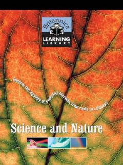

BLTabiat va fan olamiga oid qiziqarli faktlar va ma'lumotlar to'plami.
Ushbu kitob yosh kitobxonlar uchun tabiat hodisalari, geologiya va mashhur olimlar haqida qiziqarli ma'lumotlarni taqdim etadi. Unda tog' jinslari, ob-havo hodisalari va dinozavrlar kabi mavzular sodda va tushunarli tarzda yoritilgan.